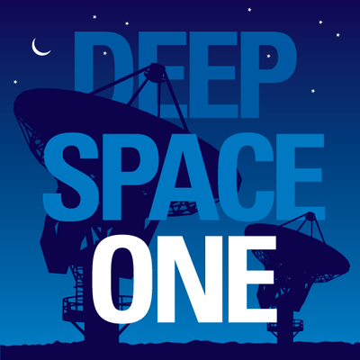
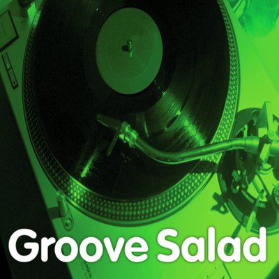
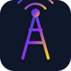
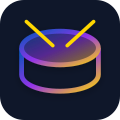

🎵 Радіо УКРАЇНИ & СВІТУ 🎵

Hit FM

Люкс FM

Kiss FM

NRJ Ukraine

Melodia FM
Sunshine House

Наше Радіо

FM Galychyna

Радіо Максимум

Радіо Nostalgie
Радіо Пятниця

Авторадіо Україна

BOB! AC/DC

Underground 80s

Radio Relax Live

Radio Relax Cafe

Relax Instrumental

Relax International

Groove Salad Chill

Bayern Chillout

Smooth Chill UK
Swiss Classic

Classic Radio

Classic FM UK

Radio Paradise Mellow
Sunshine Chillout
Drone Zone Enigmatic
Deep Space One
Space Station Soma
SomaFM Lush
SomaFM Synphaera
Suburbs of Goa

Lounge FM
Secret Agent Lounge

Swiss Jazz

Radio Jazz Gold

Radio Jazz Light

Jazz Groove
Smooth Radio UK

Radio Monte Carlo
SomaFM Fluid
Amsterdam Trance
Sunshine Trance
Sunshine EDM
Dub Step Beyond

Sunshine Rave

Sunshine Techno
Sunshine Live 90er
Sunshine Hardstyle
Sunshine Drum & Bass
SomaFM DEF CON

Dance Wave

Kiss FM Deep

Kiss FM Ukrainian

Kiss FM Digital
Ibiza Global Radio

Capital Dance UK
Heart Dance UK

EuroDance 90s Radio
105 Dance 90 Italy

Megapolis FM
SomaFM Beat Blender

Hit FM Top Hits

Hit FM Найбільші Хіти

Hit FM Українські Хіти
NRJ France Hits

Swiss Pop
Melodia FM Disco

Capital FM UK
Heart UK

Heart 80s UK
Heart 90s UK
Heart 00s UK

1LIVE WDR Germany

KIIS FM Los Angeles

Z100 New York
Indie Pop Rocks

ROKS Ballads
Melodia Романтика
SomaFM Vaporwaves
SomaFM PopTron

Radio ROKS

ROKS Hard & Heavy
ROKS Classic Rock

ROKS Український Рок

РокРадіо UA
Radio BOB! Rock
Radio BOB! Best of Rock
Radio BOB! Classic Rock

Radio BOB! Metal
Radio BOB! Alternative
Radio BOB! 90er Rock
Gold UK Hits
Virgin Rock Alternative
Virgin Hard Rock
Radio X UK
BOB! Southern
Radio X Classic
Radio Paradise Rock
Radio Paradise Main